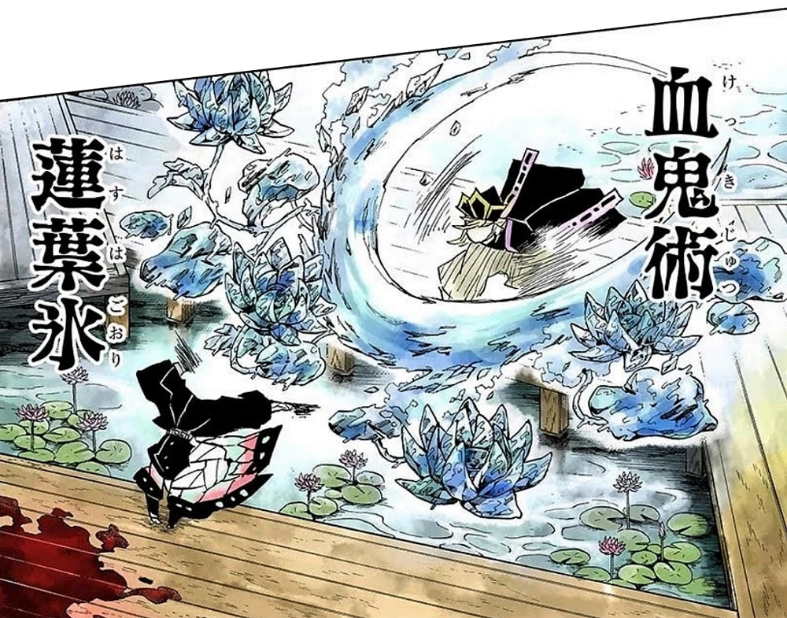
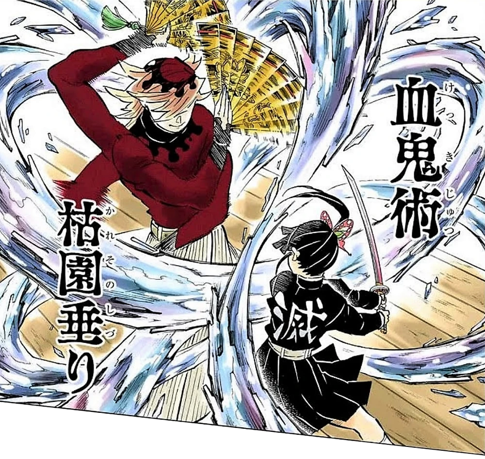
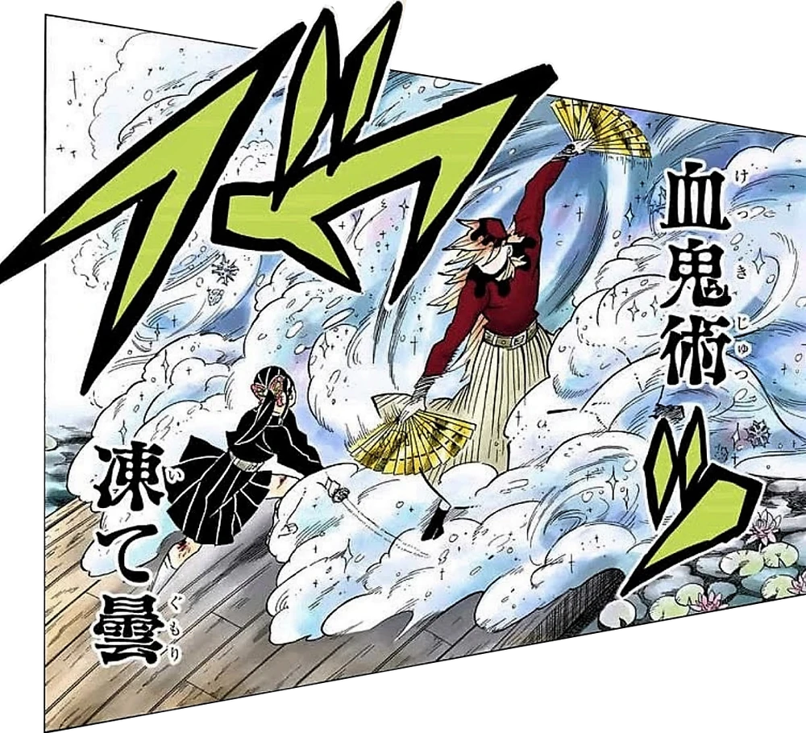
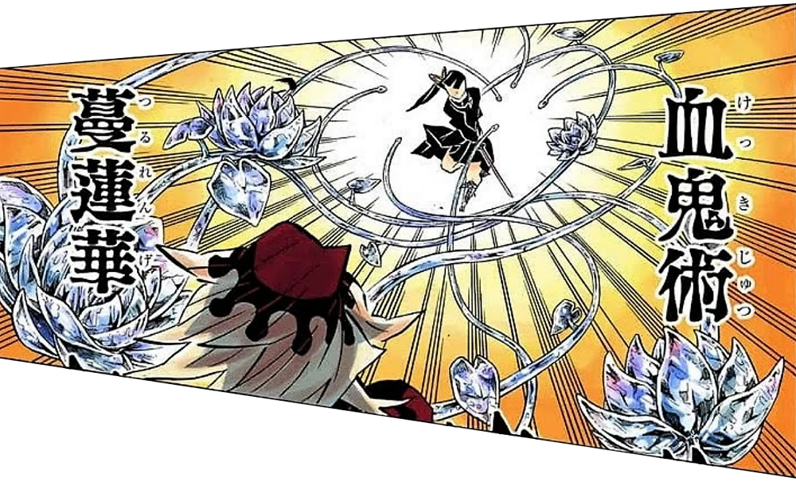
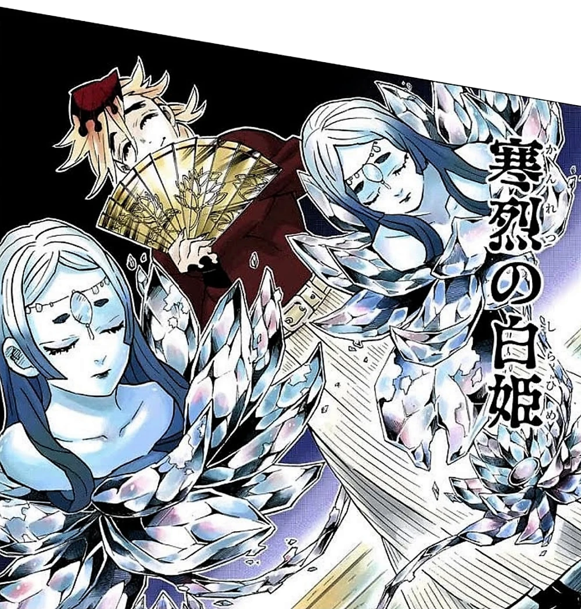
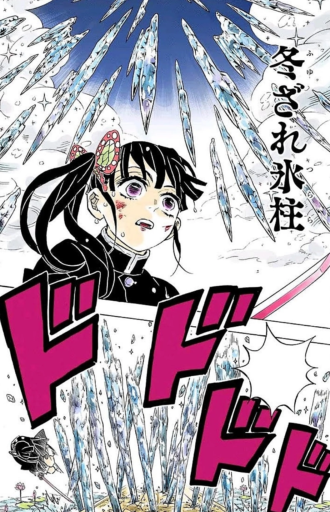
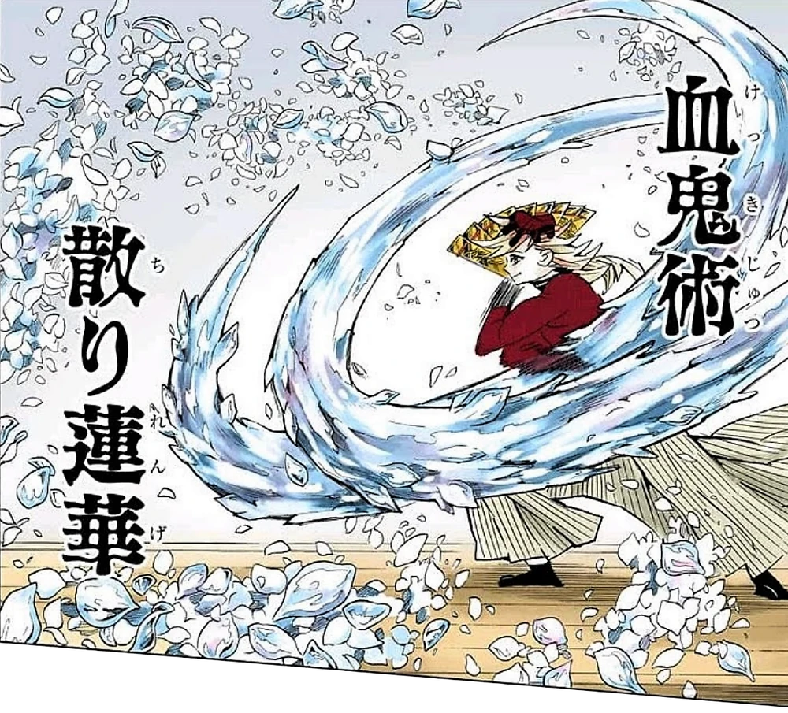
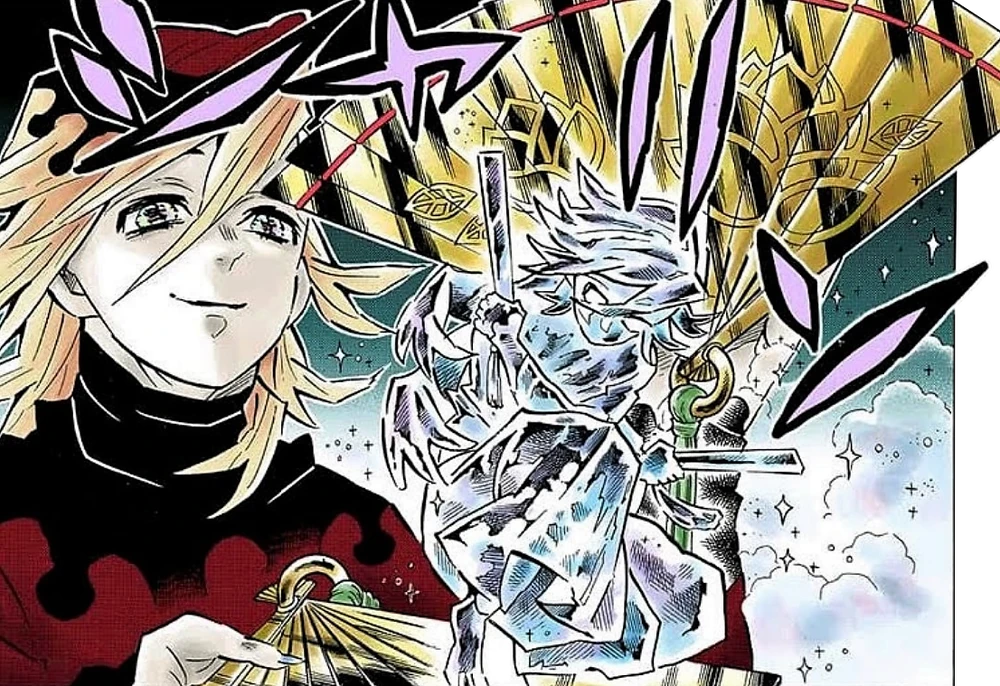
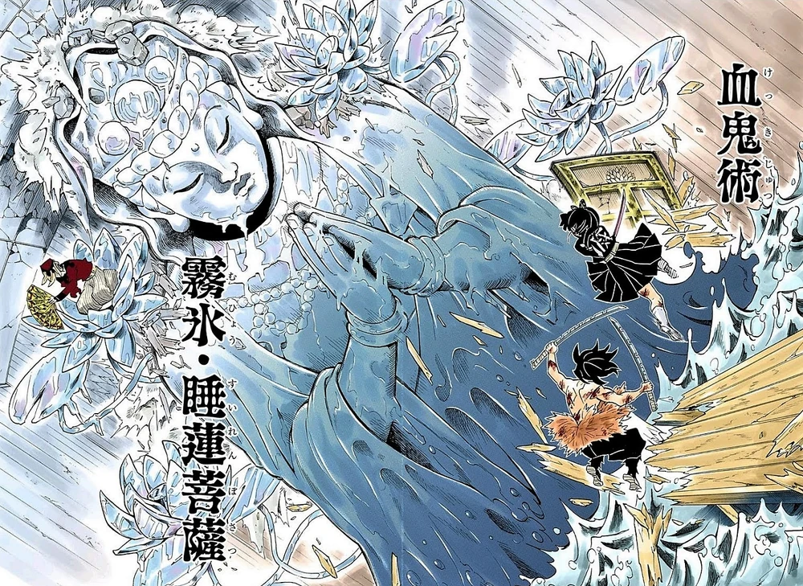

Создание нескольких ледяных лотосов из плоти и крови, которые выпускают метель из острых как бритва лепестков. Способны разорвать плоть противника на расстоянии.

Серия из множества стремительных и яростных ударов веерами, которые оставляют за собой шлейфы из ледяных лепестков лотоса, атакуя врага со всех сторон одновременно.

Взмах вееров создаёт густой туман из мельчайших ледяных частиц. Любой, кто вдохнет этот туман, подвергается мгновенному разрушению клеток легких и теряет способность дышать.

Выращивание длинных ледяных лоз, усыпанных лотосами, которые быстро вытягиваются в сторону цели. Они могут захватывать, сковывать движения или сбрасывать врагов с высоты.

Создание двух ледяных гуманоидных фигур принцесс, которые способны выдыхать мощные потоки ледяного ветра, замораживая обширную область перед собой.

Призыв многочисленных острых ледяных копий-сосулек прямо над головой противника. Они обрушиваются вниз с огромной скоростью, пробивая любую защиту.

Сверхбыстрый взмах веером, порождающий шквал летящих ледяных лепестков. Техника бьет по огромной площади, превращая поле боя в смертоносную снежную бурю.

Создание миниатюрных ледяных статуй самого себя. Эти куклы способны самостоятельно использовать все техники Магии Крови Доумы и записывать информацию о силе врага.

Высшая техника. Создание исполинской ледяной статуи Бодхисаттвы. Она способна мгновенно заморозить всё живое вокруг одним дыханием и наносить сокрушительные удары огромными руками.